|
|
|
|
|
From Kumai to Kuching
Greetings All,
The weather has a lot to do with how often we write these short (sic) missives. For example, here we are in Miri, a small city in Sarawak, one of the Malaysian provinces in Borneo and it hasn’t stopped raining all day. And, while we’d been planning to leave tomorrow, the weather forecast shows some pretty average weather around here for the next few days – so here we will stay. Looks like Peter will have his birthday in Miri after all.
To pass the time, we’ve been tidying up the boat and downloading our CD’s to iTunes on the laptop so we can update the iPod (1,708 tracks or so and counting – 4 days worth apparently - and haven't scratched the pile yet) – the humidity seems to be getting to our CD player – she’s skipping a lot.
Passage from Indonesia to Malaysia
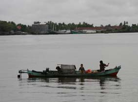
After exiting the mouth of the Kumai River, we turned right/starboard/west and were faced with a small choice in the initial route. There are sandbanks/shoals that head out some 40 miles from the bottom left hand corner of Borneo and we’d been told by a few brave yachties it was possible to cut through them inshore. Even so, being somewhat conservative, we decide to head off shore and pass south of them, even though it added some 70 miles onto our track.
And a few hours later, we were so glad
we’d given ourselves some sea room. There’s a classic piece
of old film when the Yanks set off an A-Bomb under water in
some atoll – a sort of diamond shaped water cloud
overwhelming all these old WWII ships (for history buffs,
this included the Printz Eugan which 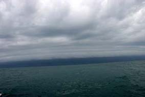
Well, that’s what this cloud that built up to the north of us looked like. Black, diamond shaped, it was driving the smaller clouds into layers as it advanced. The photograph gives it no justification.
“Oh Oh” thought Jean.
“Oh Shit” thought Peter.
We quickly dropped the main sail, reefed down the mizzen and furled the headsail to T-Towel size – and waited for the inevitable.
When it came, it was spectacular. 40+ knots of wind with rain drops the size of the Jawbreaker gobstoppers. Fortunately, the worst quickly came through with the squall front and within 30 minutes we were able to get back on course, albeit in torrential rain for the next couple of hours.
The next two or three days passed pretty
uneventfully, working our three hours on, three hours off
watches. 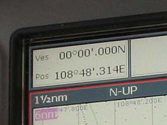 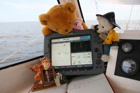
Then at 11am boat time (0300 UTC) on the
12th August, we crossed the Equator, some 5,260nm
(6,300 miles, 9,400kms) since leaving Melbourne. We
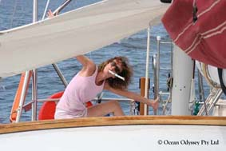
Once north of the equator, the weather changed as we moved into the SW monsoon. Every night, huge thunderheads built up over the land. Most nights we were just treated to the most amazing light shows, but a couple of nights, they drifted off shore.
This is where our radar is so useful. We can actually plot heavy rain on the screen and one night, we could see this big big storm heading west towards where we were. So we reefed down again, started the engine and headed north to try and avoid it. Not only did it then start to head north and chase us, but the radar started to show storm clouds and rain forming all around us.
Rather than have the storm slowly roll over us, we bit the bullet and turned round, trying to blast through it. The problem is you have no idea how big it is – the radar can only penetrate so far (and any echoes from ships are totally lost). The front of the storm was the usual strong winds which soon dropped out, but for the next 3 hours we were stuck in the idle of this huge electrical storm. And dodging other boats - the radar’s useless so it’s Mark 1 eyeballs string to spot the faint glimmer of a ship's lights through the rain. If we have problems seeing their big bright lights, you can be pretty sure they haven’t seen us – so we make sure we get out of their way.
But scarier is the lightening. This wasn’t the odd flash, but a mixture of cloud flashes that went off for10 seconds or more, or massive sea strikes. Now personally, we are pretty safe, Hinewai would act as a huge Faraday Cage if we were hit, but we could kiss goodbye to some $10,000 of wiring and electronic navigation gear if we are hit.
As a back-up, Jean goes into “Electrical Storm Mode”. The hand held GPS and, the Sat Phone, the Mobile Phone and the Laptop are all wrapped in tin-foil and placed in the oven – Faraday Cage within Faraday Cage. Then, at least, if we are hit, we can still see where we are and talk to people.
Arriving at Miri
All in all, it was an 8 day, 900nm
passage from Kumai to Miri.
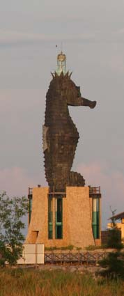
By the time we worked out where to go, dusk was approaching (and this close to the Equator it’s daylight, then “Oh, it’s all gone dark”). We started to edge our way into the channel and discovered that when the river was diverted, the entrance to the marina has silted up. We found that out when we touched bottom and slowly ground to a halt.
We pulled ourselves off, thinking “bugger this” and headed out to anchor for the night and await a higher tide the next day.
The next morning we successful negotiated
our way down the channel, past the dredger (broken) and
pulled into the marina. Within 5 minutes, the 24-hour guard
had scampered down the walkway, made us complete some form
with all our details and gave us the directions for the
marina office so we could go and pay. 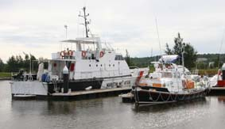
We filled the form in, went below and slept for 6 hours, only noticing when we woke up that behind us was “Louise Anne Hawker”, an RNLI Lifeboat. This totally confused Peter (it turned out she had been retired and bought in the UK by a local businessman).
We stayed a couple of days in Miri, diving up into the town to sign in with Customs and Immigration, to get some fresh food and a beer or two (Kumai, being strongly Islam had no bars and no-where to buy beer. Peter had been cold turkey for a week!) before heading off for Labuan in company of another couple of yachts.
After Indonesia, Miri looked a joy. Indonesia verges on being a 3rd world country, whereas Malaysia is definitely 1st world – especially Miri which is the centre of the major oil industry.
To get to Labuan from Miri, you head northish, then NE, dodging the oil rigs. It was interesting to watch the different styles we have – we consider ourselves conservative, but sort of weaved our way through the platforms – Jovic, a beautiful 48 footer from Gibraltar headed way north to avoid everything whereas Blue Tango, a Yank boat, cut tight inshore. Somehow they both beat us.
The 5th Borneo International Yacht Challenge - Labuan
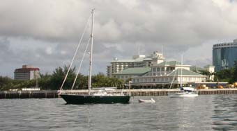
The race blurb had said we could moor in
the new Waterfront Hotel Marina. Er, no. Not yet
finished. So we joined the 40 or so yachts anchored just
off the marina, trying to leave enough room between us and
the masses of oil rig support ships also anchored off to let
the very odd looking ferries that head back and forth to
Brunei get through. 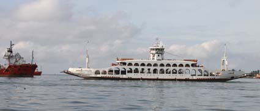
We called up the local water taxi on Ch 67 and headed ashore to register with the Harbour Master, and visit Immigration and Customs. Even though it is all Malaysia, Labuan is part of the Sabah province (Miri=Sarawak province) and it’s just like changing countries. We’ve done 4 pages of our passports over the last few weeks.
Back at the Hotel, we met up with some of the other yachties, and joined them milling around wondering what was happening. A rumour had got around there was a briefing at 12, then 2, then 4. None happened so we all transferred to the bar for the night.
The next day, word went around the radio net that there was a briefing scheduled for 2pm so we all headed ashore. And this time it happened – we registered, were briefed on the races, went through all the boats measurements with the handicapper to get our handicap, were allocated out hotel rooms and received the first half of our US$400 attendance fee.
Labuan is a tax-free zone so a lot of the shops are all flogging duty free booze, smokes and electronics. But behind all this is a vibrant community once you get away from the waterfront. We were looking for a bookshop to get a Malay phrase book (while Bahasa Malaysian is very close to Bahasa Indonesian, it’s a bit like American English to British English – two countries separated by a common language).
Eventually we asked for help – with Jean totally confusing the librarians of the town library – an attractive modern two story edifice of brown and white stone and glass. She was asking where local bookshops were, they were trying to explain that she was in a library where she could borrow a book.
Eventually we found a couple – more like stationers than bookshops. Lots of stationery with a small area mainly set aside for educational books or books on Islam all wrapped in plastic. No browsing here. The few (2nd hand) novels in English sell for a king’s ransom.
Walking back, we found a strange small
commemorative park. Among the towering trees planted as
saplings by various dignitaries to celebrate Lizzie’s
coronation in 1952, were plaques not only commemorating the
arrival of the Allies after Japan’s surrender, but also the
arrival of the Japanese a few years before – even a plaque
remembering the death in a plane crash of the Japanese area
commander. To the locals, we were all invaders, not
liberators ( 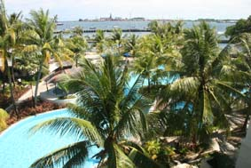
Then back to the hotel – a room over looking the pool, air conditioned and free. We rotated long luxurious showers before dressing for the launch event that night and being picked up in coaches at 6.30.
The event was being held in the Rotunda – a large three storied beehive-shaped building standing on stilts at the end of a pier. The top floor is open to the air – which was a shame. We hadn’t even got seated before a heavy heavy tropical storm came through – and the strong winds blew the rain straight over everyone. For a while we pressed on, sitting at our tables getting soaked, but eventually there was a rush for the empty rooms down-stairs.
We felt so sorry for the organisers, they struggled on desperately, but it was impossible. At first, it was only a few yachties called up for local cabs to get them back to the hotel, soon, no pun, it was a flood. It was like being back at uni, except it wasn’t how many students fit in a Mini, but how many soaked yachties fit in a minibus.
The next day was the first race, a simple short up wind leg, then a reach down to a windward mark and back. The hot racers went first, then 5 minutes later the multihulls. We should have started 5 minutes after that, but had hung back from the line to avoid the mass of boats tacking back and forth. As the multihulls started, the wind died – it took us an hour to claw our way to the start line – but then the wind came back and we had a reasonable sail – coming 4th (of 7) in our division.
One of the last back, we anchored up, packed up up the boat and caught the water taxi back to the hotel for a quick shower and dress up in the glad rags for the official launch event. This too had been scheduled for the Rotunda, but fortunately they moved it since the rain came again that night.
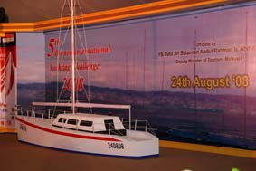 It was one of those sit down affairs with big round tables – we wouldn’t have been surprised to see potato croquets. The front couple of rows of table were all reserved for the dignitaries with us yachties stowed down the back. That suited us – it was mean to be a dry event, but most yachties bought bags with casks or beer stashed and we were out of sight.
The food was superb, but first we had to
endure all the speeches of the official launch (one of the
reasons they go on so long is all the local politicians have
such long names – by the time the MC has thanked them all
for coming, we’re into a new Ice Age). Up on the stage was
a wooden mock up of a yacht and to officially launch the
event, the biggest knobs pulled on cords which raised the
two sails. 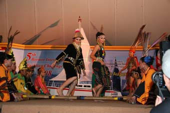
After the speeches, the entertainment consisted of local dancers and they were excellent.
The 5th Borneo International Yacht Challenge - Miri
The next morning we sadly signed out of
our air con’d room and headed back to Hinewai to get ready
for the passage race to Miri. We actually had quite a good
start, only 10 minutes late and for a few hours found a
magic patch of wind that slowly shifted round as we came out
of the harbour and left us higher than a lot of the fleet.
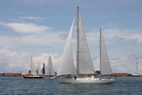
Around 11pm, we were in the last 10% of yachts, but still not doing too badly when considering our handicap rating. Then the weather reared its head.
We’re told this sort of weather’s early this year. Great! Every night, you can see big thunderheads forming over the land and during the night these produce a light show that beats even Darwin. Some storm cells stay over land, some drift out to sea – and us. But you can track them to some extent with the radar – the heavy rain gives a good return – and spot the storms that fancy a bit of travel.
As we did that night. There was a humdinger building on shore and it was clearly on the move. So we reefed down all the sails and headed off-shore.
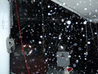 It caught us and half a dozen other boats at the back of the fleet. Generally, it’s only the front of the storm that packs a punch, behind it the wind drops out and its just rains – sorry - RAINS. This time the strong winds went for more than an hour and we ended up having to sail with them – back the way we had just come. Then all of a sudden they’d gone, and we were becalmed in the rain. There was a quick spate of calls on the VHF to check everyone was OK and we looked at each other in our our bright yellow wet weather gear. “Bugger this! Let’s motor”.
We dropped the sails and did just that – expecting some wind to come back. Well, the rain stopped, but it was over 12 hours before there was enough wind to start sailing again. We came last, getting back in to Miri Marina again after 5pm.
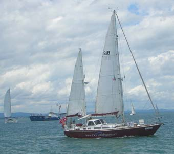 And that day was meant to be our Rest Day. We slept on board that night and headed out the next day for the first of the Miri Harbour races. Same course layout as Labuan, and we had a good start. Damn. It made us cocky.
The last long leg was perfect for us to
fly our Cruising Chute – the big baggy sail at the front
that’s not quite a spinnaker. It’s a big and powerful sail,
and when we’re just sailing along, we take our time to put
it up. But this was a race – so Peter’s running around the
foredeck like a headless chook.
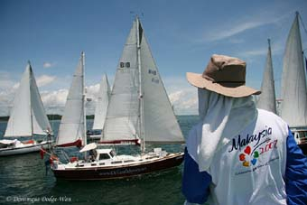
A new hotel that night – such bliss –
another function. The next day, another race and again we
planned to fly the kite, but as we drifted around the
course, the wind shift made it impossible for us to try – or
go.
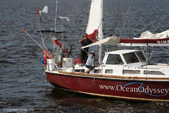
As we finally came past the finish boat,
we let rip with our shaken up cans of beer, spraying each
other in celebration at having finished. The officials
joined in – they had these aerosol air-horns that they’d
“parp” as each boat finished 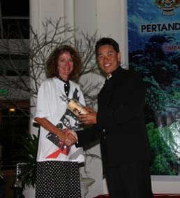
and since they were not going to be needed again once we went through so they let each blare out until the propellant ran out.
That night was another big closing function which went on well into the wee hours.
It had been a great week. The
Malaysian’s admit the regatta is run purely as a tourism
exercise, to spread the work about Malaysian Borneo – and
are willing to invest. And it’s paying off – double the
number of yacht’s were here this year to last – and all had
a ball. And more, all of us will go away singing the
praises of the beautiful and very unspoilt area. 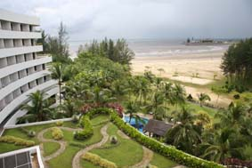
As did many other yachties, we’d decided to treat ourselves to an extra night in the hotel. It had superfast free wireless broadband so we took the opportunity to get the last email out and update the website, with Jean checking out the pool. That night the hotel had an international food festival on – Roast Lamb – yummy.
We had every intention of checking out the next day – and indeed did before 12. But we got waylaid in the bar by some others who were staying when Peter wandered back to Reception about 8ish to see about a room again, we got a free upgrade to the Executive Suite with breakfast thrown in.
We did leave the next day.
Back on the boat, it was back to make and mend – scrubbing the waterline again (snake free this time), changing the oil, touching up the rust, planning where to go next and researching where we are going to pull the big girl out to re-antifoul in October.
Liver & Bacon in Brunei
We also took the chance to head over to Brunei. Originally, we had planned to sail up but we’d heard a few stories about how Aussies are being treated. Apparently, the Sultan owns a small property in Northern Aus (small! It’s bigger than Brunei). He used to just fly in and out whenever he wanted – then the Howard Government decided he needed to go through immigration procedures like mere mortals. “Right Ho”, says the Sultan, “You want me to do paperwork, then every Aussie who visits Brunei has to do the same”.
Brunei Immigration doesn’t give you a hard time; they just work, slowly, to rule. So we decided to hire a car and driver (David Kho – Telephone 016 873 822) and just pop up there for a day.
David, a Chinese Malay in his late 60’s, picked us up in his nice air-conditioned SUV at 6.30 and we headed off. Like many of his age he is tri-lingual (Malaysian, Chinese and English (his weakest)).
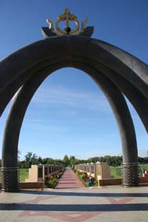 It’s only an hour to the Brunei boarder and we were through in 30 minutes – David dolling out chocolate bars seemed to help.
Brunei is very like Malaysia – but also it’s not. Thanks to the Oil income, there’s no unemployment and no income tax. The roads are as good as any and most cars are new, but there’s also a feeling of aimlessness – everyone has a job, but are they productive?
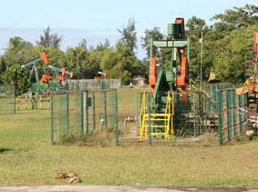 Anyway, our first stop was the monument to the One Billionth barrel of oil being pumped a few years back – it had a sort of Saddam Hussein monolithic feel to it. Not Peter’s cup of tea, but he was fascinated by all the Nodding Donkies all over the place – by the road, in Parks, Housing Estates (back gardens) – everywhere.
Then it was on to the Oil and Gas
Discovery Centre, 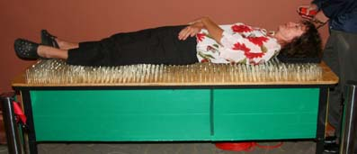
Then it was on to Bandar Seri Begawan, the capital city, although stopping first at the Empire Country Club Hotel. We’d heard about it on the grapevine, built by one of the Sultan’s sisters (or wives?) and had briefly considered a night there until we found out that one night stay is the same as month’s cruising budget for us. But still worth a look we were told.
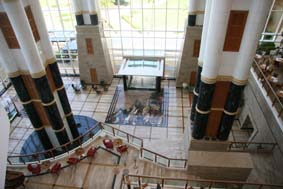 At first sight it looks like any old 6-star hotel – lots of marble and guilt in reception. But then, just past reception is the atrium – and you are at the top of this five storey hole with layers of bars, restaurants, quiet areas – all held up by these vast square pillars – again all marble and gilt, big enough to hold rooms inside them, even with little wooden shutters. It’s a stunning design, literally, stunning your senses and drawing you in – having travelled through Egypt, Peter had a sense of an Ancient Egyptian influence – it made you realise how the old Pharaohs might have lived.
Next was a drive-by of the Sultan’s
Palace – it is vast – like 2kms x ½ km in size – the largest
palace in the world still lived in. Or so we were told.
All you can see is the gates and a couple of guards. Then
to the Mosque being built by the Sultan and the Omar Ali
Saifuddien Mosque, built by his father
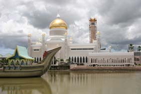
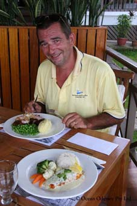 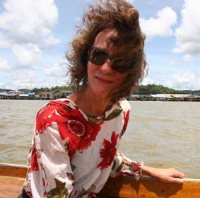
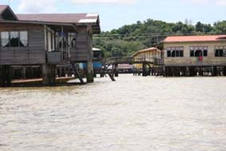 The other touristy thing we did was have a boat ride around the town on stilts.
All along the Brunei River is this
thriving community whose homes are built on
stilts above the river. 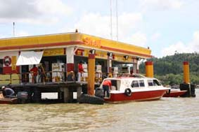
These are not little wooden poles,
but solid concrete frames with substantial homes on them.
Over 30,000 people live in this community – and that’s in a country of only 350,000.
And that was it for Brunei – an odd place of great wealth, pride that every school is air-conditioned and there is no unemployment. And, for Peter, the enduring memory of the best liver and bacon (with mashed potatoes, bullet peas and onion gravy) that he’s had for years. Almost worth going back for.
Well, almost it for the trip. We got to the border of Brunei, but Immigration was closed. Being Ramadan, all the officials were in their booths breaking their fast for the day and were not opening for another 45 minutes. Peter bet Jean 10RM that there’d be about 20 cars waiting by the time they opened – Jean thought 30. A draw was declared with 25 cars.
Leaving Miri – almost – and Peter’s Birthday
The plan was to head off the next day so
that Peter could have his birthday in Kuching but as ever,
the weather closed in.
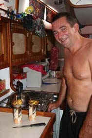 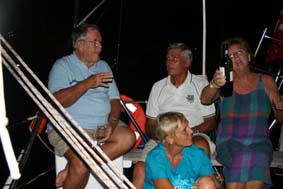
Even after the wind dropped out, the seas were still a real mess for another couple of days so we ended up inviting all the other yachties onto Hinewai that evening to celebrate Peter’s birthday. We took it carefully since we were definitely leaving the next day.
And we did. While Peter did the final top-up of the water tanks and tied the boat away, Jean popped into town with Simon to get fresh veggies and fruit from the market. Simon is a good-fun local character who has found a little niche as a driver with the yachties (Tel 0198 861 754). Like David, our driver for Brunei, he’s into retirement age, but unlike David’s plush SUV, Simon has this trashed old red Toyota saloon. This means he doesn’t mind filling his boot with jerry cans of Diesel and nothing is too much trouble for him. He’ll pick you up at the marina, run you into town, drop you off, arrange to meet back in 30 minutes, rush back to the Marina, pick some other yachties up, run them in etc etc etc. He is a study in time and motion efficiency, rarely being late.
It was odd leaving Miri. We’ve met some great people, some of whom we’ll see again as we all work our way up to Phuket, others who are heading north for the Philippines we may never see again. But that’s cruising.
Leaving Miri – finally – some visitors and on to Kuching
So it’s coming to the point where we can wrap this up. It was a three day passage down to Kuching and it was pretty average. There was little decent wind to sail so we had to motor a lot. On the other side of the coin, we also had a nightly thunderstorm – which although we are getting used to them and have no worries about the strongish winds, they do trash our sleep patterns. Normally at night, we do 3 hours on, 3 off, but with bad weather, we both stay up and you never seem to catch up that sleep.
It was a trip with a bit of wild life
though. We’ve been saddened at how rarely we see dolphins
on this trip compared with 11 years ago – something many
long-term cruisers have commented on.
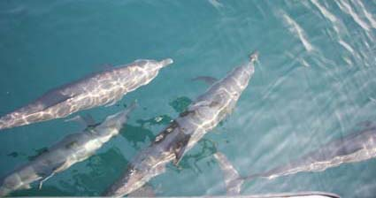
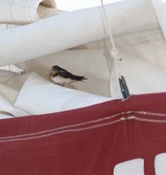
And up in the air, we had a few visitors
– well, night guests. We’d had a little swiftlet come
aboard a while back but sadly it was so exhausted, it didn’t
survive the night. One night, we had a couple arrive at
dusk – we’re about 60 miles off-shore at this point. They
have a quick fly around to choose somewhere to sleep – at
first one inspected inside the main-sail, but it was a
little slippery so he chose to hang onto the scabbard for
the dive knife we have tied to the boom. The other settled
down on the deck behind us, sheltered by the life raft. 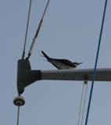
Meanwhile, up on the first spreader of the main mast, something that looked a bit like a tern settled. We’re not sure how much sleep it got – every time the yacht rolled, he slid along the spreader, wings half open to balance himself. And then we rolled back….. But to give him his due, he hung on.
The next morning, they all flew off – we were still 20 miles off-shore, but the wind was blowing the right way for the little birds so hopefully they got to land safely.
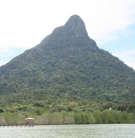 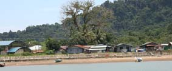 So we made it into the Santubong River yesterday (since they built a low bridge, yachts cannot get up to Kuching anymore) and dropped the hook just off this little village in the lee of a “miniature Sugar Loaf Mountain” (Jean’s description – Peter thinks it’s the eroded core of a volcano). This morning we helped one of the other yachts untangle their anchor chain from a mass of old fishing nets and after lunch, we’re going to pop ashore and explore. Tomorrow, we’ll grab a local bus into Kuching city itself – Jean wants to visit the Cat Museum there.
We’ve also got to work out where to get some more fuel – Yippee, another 200 ltrs to jerry can out to the boat – with the aim of heading off in three days. We’ll day sail, anchoring at a couple of islands where, we are told, the turtles are coming ashore to lay their eggs. Then, if there is a decent weather window, we’ll head west for Peninsular Malaysia – specifically Tioman Island, about a four day passage.
Wonder where the next email will be sent from?
All the best
Peter & Jean
PS - up to 4,500 tracks on the iPod and still going strong.
Next Log Page: From Kuching to Singapore
|
|
|
|
|
|
|
The Crew The Route The Yacht The Log Guestbook Links Contact Us |
|
|
|
|
|
Home |
|
|
All Original Content of this Web Site Copyright © 2000, 2001, 2002, 2003, 2004, 2005, 2006, 2007, 2008, 2009 Ocean Odyssey Pty Ltd |
 And not just homes – shops, schools, power station, police
and fire stations – even a Shell petrol station.
And not just homes – shops, schools, power station, police
and fire stations – even a Shell petrol station.